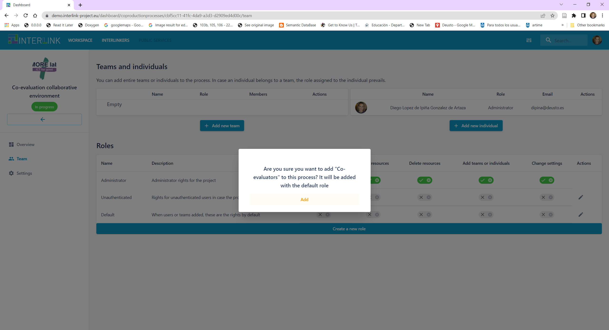
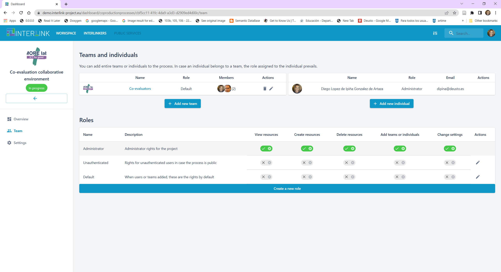
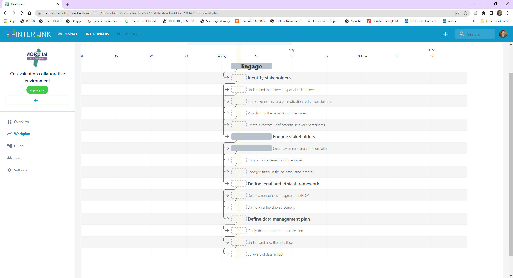
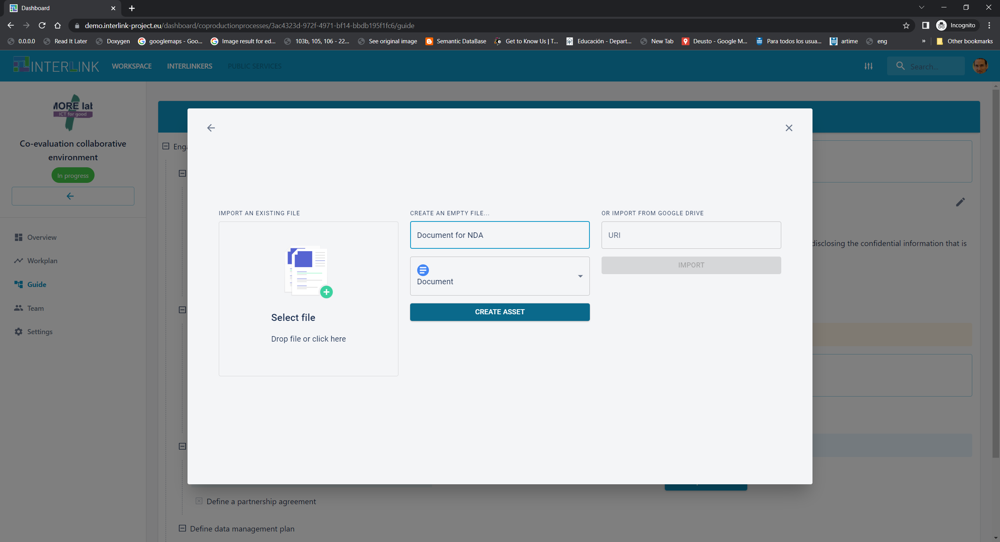
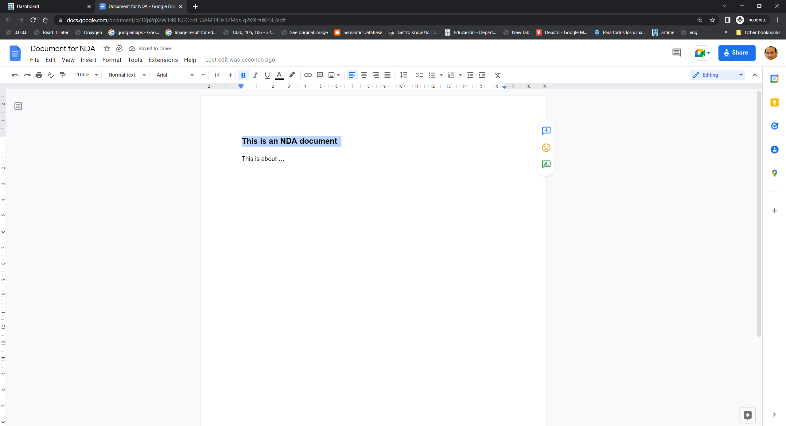

User Acceptance testing
- Acceptance Testing
- This is a type of testing done by users, customers, or other authorised entities to determine application/software needs and business processes. Acceptance testing is the most important phase of testing as this decides whether the client approves the application/software or not.
- User Acceptance Testing (UAT)
- UAT is a type of testing performed by the end user or the client to verify/accept the software system before moving the software application to the production environment. UAT is done in the final phase of testing after functional, integration and system testing is done.
This document ilustrates the different tests needed to ensure that the expected functionality, from the end-user’s point of view, of the INTERLINK Collaborative Environment is met. The main Purpose of UAT is to validate end to end business flow. It does not focus on cosmetic errors, spelling mistakes or system testing. User Acceptance Testing is carried out in a separate testing environment with production-like data setup. It is kind of black box testing where two or more end-users will be involved. User acceptance testing is needed for testing whether the final product is accepted by client/end-user.
Smoke Testing
The first section carries out a so-called Smoke Testing
- Smoke Testing
- In computer programming and software testing, smoke testing is preliminary testing to reveal simple failures severe enough to, for example, reject a prospective software release.
- Staging server
- A server used to temporarily show certain users new and revised Internet and/or intranet pages before they are put into production.
The following Smoke Testing should be applied over INTERLINK’s staging server:
Before using the Collaborative environment, you must first login with your google credentials or create your own credentials at https://demo.interlink-project.eu/, i.e. the staging server of INTERLINK. IMPORTANT: All members of an envisaged team must logged into the platform before they can be added to a team.

Create a team which wants to take part in a co-production process.


Create a co-production project where the activity to co-create is assessed

Link the created team to the created co-production process.  
Choose a co-production process guide (flexibility to choose the best fitting schema)
Notice that there are several co-production trees available. We will take the one named “Default schema”

Beware of emergence of Guide view menu item on left hand side

You may customize such tree to the specific needs of your co-production process. Currently only DELETE task allowed, soon we will be able to add new objectives & tasks. Check below how a task is removed after having clicked on the PENCIL icon which appears on the right hand side of the task visualization panel.

Observe that specific co-production trees can be defined and, hence, selected (e.g. VARAM case)
You may also assign durations to tasks

Then we can see in WORKPLAN view the time span defined, by clicking on the “Time planification” link in the GUIDE view or clicking on the left hand side menu option named “Workplan”. You may return to the Workplan view, to see the task details by clicking on the name of the task in the WORKPLAN view. 
Create new roles and new teams with different rights than the core co-producers’ team. Currently a role applies to all phases, objectives and tasks of a co-production process.
Create a new team

Create a new role, assigning it the right to “View resources” only

Assign the role of co-observers to the co-observers team

Use the guide to co-produce SOMETHING, e.g. new document to collect feedback of collaboration process. For each of the tasks in the co-production phases you may select any of the recommended INTERLINKERs or instantiate a new one based on the generic software INTERLINKERs available at the bottom of the screen shown when selecting a co-production task.
Select another task in the GUIDE view, e.g. ENGAGE > Engage Stakeholders > Create awareness and Communication
Notice the INTERLINKERs recommended

Select a task in the GUIDE view, e.g. ENGAGE > Define legal and ethical framework > Define a non-disclosure agreement (NDA)
Click on the blue button at the bottom entitled “Initiate Procedure” to give place to a new Google Docs document
Select the type of document to create with the support of Google Drive INTERLINKER 
Realize about the new resource that appears at the bottom of the task description panel
Open it in Google Drive by clicking on the newly created resource name 
Review progress of project in OVERVIEW
Check functionality of the INTERLINK catalogue by clicking on INTERLINKERs, browsing, filtering and selecting INTERLINKERs.
Enter in the catalogue of INTERLINNKERs by clicking on INTERLINKERs top menu

Filter by selecting options on Nature filter

Review contents of an INTERLINKER by clicking on its title
You main review what it offers by visiting Preview tab

Acceptance testing
Next, we will illustrate how to perform a more exhaustive suite of manual tests that expore all currently available functionalities within the Collaborative Environment.
The steps to validate that the miminum functionalities to allow a collaborative process to be materialized are listed below:
Ensure that team members have logged in at least once at INTERLINK’s staging server
Ensure that two sessions at least are opened, e.g. one for user user1@deusto.es and another one for user user2@gmail.com, to be able to test the environment’s collaborative features sensibly.
Create a team “INTERLINK co-production team for co-evaluation of collaborative environment” which will jointly generate an assessment of the environment and its capabilities to carry out collaborative processes. Add at least 2 members to the team, e.g. user1@deusto.es and user2@gmail.com
Create a co-production project, namely “Co-evaluation of the co-production process”
Go to Settings and ensure that the project has a good logo. Click on the pencil icon and then SAVE.
Click on “Team” left hand side menu and add the created Team to the project.
You can modify the team composition at any time by clicking on the hyperlink of the Team name.
Click on “Overview” and select the co-production schema (tree) to use. Choose “Default schema”
Hit on “Guide” left hand side menu option and let’s start as a team co-evaluating the collaborative environment
Browse through the different phases of the co-production guide
Select different phases
Select objectives within a phase
Select tasks within an objective
Observe that different INTERLINKERs are recommeded for different tasks
Instantiate a generic INTERLINKER, where feedback with your observations can be gathered in a shared Google Docs with the rest of the co-evaluators
In GUIDE view, select BUILD > Technical Implementation > Technical implementation
Hit on “Initiate Procedure” > “Create a Google Drive document”, and create a new asset entitled “Feedback about usage of Collaborative Environment”
Ensure that all team members edit and insert their comments in such shared document
Notice that they all could access to feedback document when clicking on Overview menu option on the left hand side.
Explore how to navigate across the different views of the Collaborative Environment.
Explore navigation between “Guide” view and “Workplan” view by hitting on “Time planification”, once within a chosen task
Test changing the Time planification of a task, by hitting on the pencil and selecting start and end period, under the task screen within GUIDE view
Explore navigation between “Overview” view and “Guide” view by hitting on “See Task”
Use one of the recommended INTERLINKERs
For instance, select “Stakeholders Mapping Canvas” INTERLINKER under task shown when navigating to Engage > Identify Stakeholders
Click on button “Instantiate as resource to use in the project”
Check the newly created resource appears at the bottom of the page under “Current resources”
Open the generated resource in the form of a presentation and add some modifications
Check that different recommended INTERLINKERs or those generic ones instantiated through “Initiate Procedure” button can be started
Continue inspecting the different tasks and INTERLINKERs that are recommended for 5’
During the whole process PLEASE GATHER YOUR IMPRESSIONS / FEEDBACK on the shared document entitled “Feedback about usage of Collaborative Environment”
Remember that from OVERVIEW, you can simply click on the resource title to be able to open it.
In order to provide direct feedback on any mistakes, bugs requested please use the following two channels:
Fill in the ALPHA QUESTIONNAIRE of INTERLINK.
Access to the Redmine support channel, log in and create a new issue under proj_wp4_PLATFORM